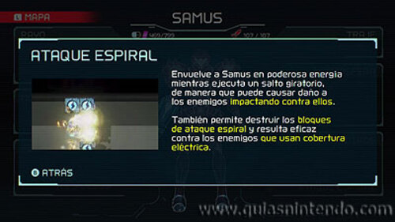
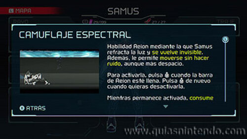

-

Permite adherirse a las superficies imantadas azules gracias a un campo magnético. Lo consigues en Artaria durante el Paso 7. Destruye al E.M.M.I.-02SM para obtener el aracnoimán.
Habilidad que permite recorrer pasajes estrechos adoptando forma esférica. Lo consigues en Cataris durante el Paso 15. Destruye al E.M.M.I.-03MB para obtener la Morfosfera
Permite a Samus lanzarse a velocidad supersónica tras una breve carrerilla. La consigues en Dairon durante el Paso 24. Destruye al E.M.M.I.-04SB para obtener la aceleración.
Rayo con forma de cuerda que se puede fijar a los puntos de enganche azules. Lo consigues en Artaria durante el Paso 25. Regresa a Artaria y obtén el rayo enganche.
Otorga a Samus un impulso adicional en pleno salto giratorio. Lo consigues en Ghavoran durante el Paso 36. Descarga el mapa de Ghavoran y obtén el impulso giratorio.

Proporciona a Samus la capacidad de impulsarse repetidamente durante la ejecución de un salto giratorio. Lo consigues en Ferenia durante el Paso 42. Derrota a dos robosoldados Chozo y obtén el salto espacial.
Envuelve a Samus en poderosa energía mientras ejecuta un salto giratorio, de manera que puede causar daño a los enemigos impactando contra ellos, Lo consigues en Artaria durante el Paso 49. Regresa a Artaria y obtén el ataque espiral.
Habilidad Aeion mediante la que Samus refracta la luz y se vuelve invisible. Además, le permite moverse sin hacer ruido, aunque más despacio. Lo consigues en Artaria durante el Paso 8. Derrota a Corpius para obtener el camuflaje espectral.
Habilidad Aeion de combate que permite a Samus desplazarse instantáneamente hacia delante o hacia atrás una cierta distancia. Lo consigues en Burenia durante el Paso 22. Obtén el impulso súbito.
Habilidad Aeion que permite a Samus escanear el entorno mediante ondas sonoras para detectar la presencia de bloques ocultos. Lo consigues en Ghavoran durante Paso 39. Obtén el radar a impulsos y regresa a Ferenia.